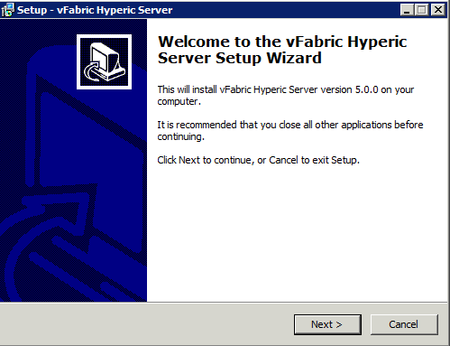
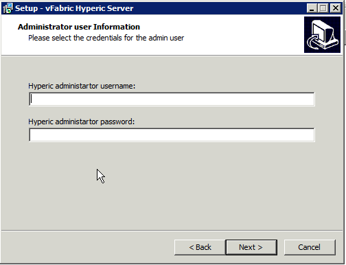
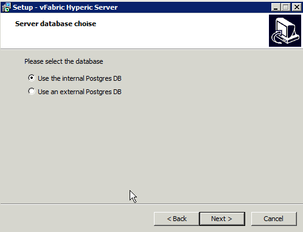
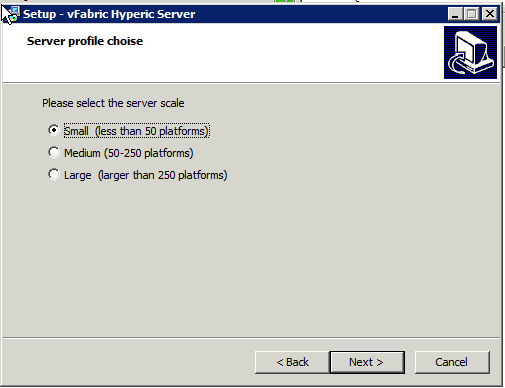
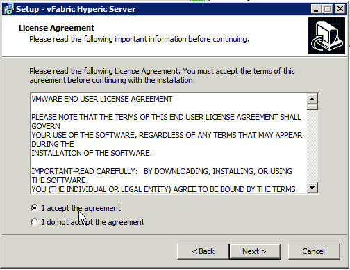
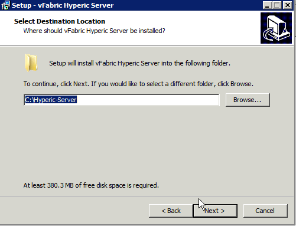
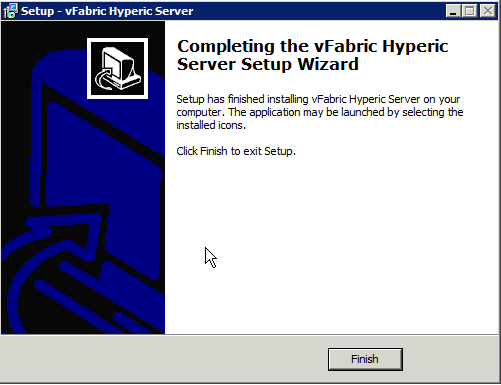

About this page...
This page has instructions for performing a new installation of vFabric Hyperic Server using the vFabric Hyperic Server Windows Setup Wizard. Before running the wizard, see Hyperic Installation and Startup Process for information about where installation fits in the implementation process. For production environments, there are several steps to perform before installing the Hyperic Server and Hyperic Agent, including database setup and SSL configuration.
If you wish to upgrade an existing Hyperic deployment, please see Migrate v4 Hyperic Server and Database to v5.
The instruction below assume you have already downloaded the vFabric Hyperic Server Setup Wizard to the platform where you want to run the server.
To install the vFabric Hyperic Server:
- In Windows Explorer, double-click the vFabric-hyperic-hqee-server-5.x.x.exe file.
- On the Welcome page click Next to start the installation.
 - On the Administrator User Information page, enter a username and password for the Hyperic admin account.
 - The HQ Server Properties page displays default values for the Hyperic Server's plain text and SSL listen ports, 7080 and 7443, respectively. Enter different values as desired, or accept the defaults and click Next.

- On the Server Database Choice page, select whether you wish to use the built-in or an external Postgres database and click Next. For more information, see About Sizing Profiles in vFabric Hyperic.

If you are going to use an external Postgres database, it must be set up prior to Hyperic Server installation. If you have not already configured the Hyperic database, click Cancel, and configure the Hyperic database as described in Set Up Hyperic Database before installing the Hyperic Server. 
- On the Server Profile Choice page, choose the appropriate scaling profile for your environment and click Next. For more information, see About Sizing Profiles in vFabric Hyperic.
 - On the License Agreement page, accept the agreement and click Next to continue.
 - On the Select Destination Location page, accept the default installation directory, or browse to the desired directory, and click Next.
 - On the Completing.. page, click Finish to complete the installation.
